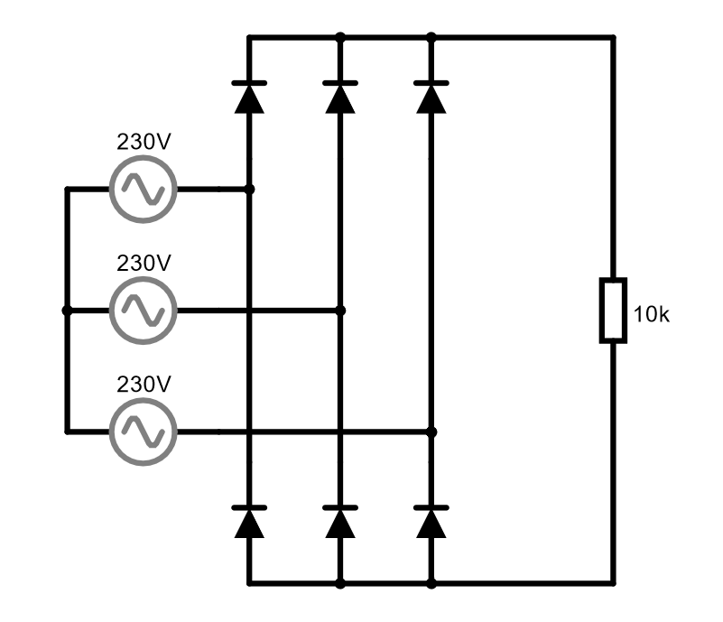

2. El diodo rectificador¶
Los diodos rectificadores están especializados en convertir la corriente alterna en corriente continua que necesitan la mayoría de los aparatos electrónicos.
Estos diodos pueden rectificar la corriente alterna que llega a nuestras casas, con tensiones relativamente altas (hasta 311 voltios de pico para una tensión alterna de 230 voltios eficaces).
También se encuentran en los transformadores de alta frecuencia que utilizan casi todas las fuentes de alimentación de ordenadores, cargadores de teléfonos inteligentes y tabletas, televisiones, etc.
Diodo rectificador de media onda¶
Este es el esquema más sencillo que se puede utilizar para convertir la corriente alterna en corriente continua. Este rectificador solo deja pasar el semiciclo positivo de la tensión alterna y bloquea el semiciclo negativo.
Este esquema tiene el inconveniente de que la corriente de salida es pulsante y se desperdicia la mitad de la tensión de entrada.
Diodo rectificador de onda completa¶
Este esquema consigue transformar tanto los semiciclos positivos como los semiciclos negativos de la tensión de entrada en tensión positiva a la salida.
Para poder funcionar utiliza dos diodos por cada línea de corriente alterna. En sistemas trifásicos, con tres líneas de tensión, se utilizan seis diodos en total para rectificar la tensión.
En las siguientes simulaciones se pueden ver dos configuraciones de diodos. Ambas son eléctricamente equivalentes y solo se diferencian en la posición de los diodos en el dibujo.
Diodo rectificador con filtro¶
El rectificador de onda completa consigue aprovechar toda la tensión alterna, pero todavía hay valles de tensión en los que la salida vale cero. Si queremos tener tensión continua a la salida, podemos utilizar un condensador que va a almacenar suficiente carga eléctrica para poder alimentar la carga de salida durante el tiempo que la tensión rectificada tiene valores bajos de tensión.
Este es un circuito muy usado en las fuentes de alimentación de todo tipo de aparatos electrónicos. Es interesante comprobar cómo la corriente que absorbe del generador de alterna es una corriente pulsante. Esto produce distorsiones en la corriente de la red de alimentación eléctrica al sumarse el efecto de múltiples aparatos electrónicos de muchos hogares.
Ejercicios¶
Dibuja un circuito rectificador de media onda que rectifique la tensión alterna de 230 voltios y que alimente a una resistencia de 100 ohmios.
Dibuja debajo del circuito la forma de onda de la tensión en la resistencia.
Recuerda que en el simulador la gráfica verde representa la tensión y la gráfica amarilla representa la corriente.
Dibuja un circuito rectificador de onda completa basado en los valores del ejercicio anterior.
Dibuja debajo del circuito la forma de onda de la tensión en la resistencia.
Realiza en el simulador de circuitos un rectificador de onda completa de una línea trifásica como el que aparece en la siguiente imagen.
El generador de arriba debe tener un 'Desplazamiento de Fase' de 0 grados (no hay que cambiarlo). El generador de en medio debe tener un 'Desplazamiento de Fase' de 120 grados. El generador de abajo debe tener un 'Desplazamiento de Fase' de 240 grados.
Dibuja la forma de onda de la tensión de salida en la resistencia. ¿Qué puedes decir sobre la forma de onda en comparación con la forma de onda de un circuito monofásico como el del anterior ejercicio?
Modifica el condensador del circuito 'diodo rectificador con filtro'.
Cambia el valor del condensador a 50uF. ¿Qué cambios ocurren en la tensión de salida y la corriente del generador?
Cambia el valor del condensador a 800uF. ¿Qué cambios ocurren en la tensión de salida y la corriente del generador?
Teniendo en cuenta que un condensador grande produce menos variación en la tensión de salida y que esto es deseable. ¿Por qué crees que no se utilizan condensadores grandes en este tipo de circuitos?
{kind=link}